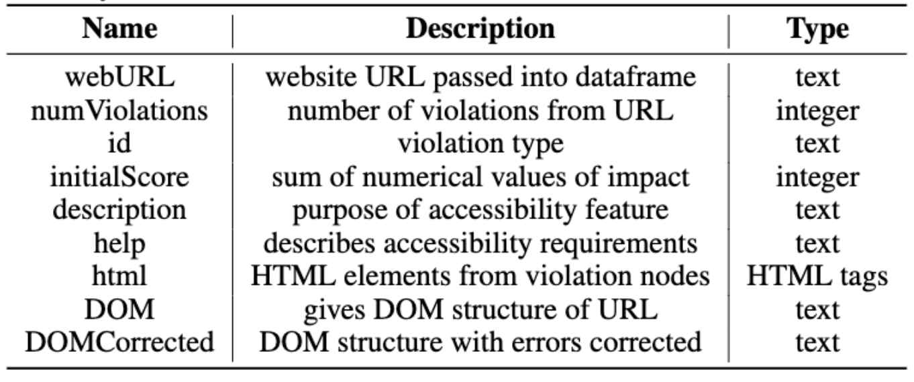
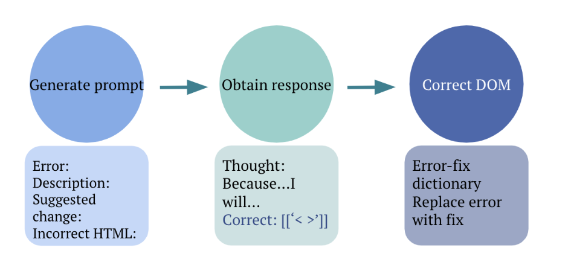
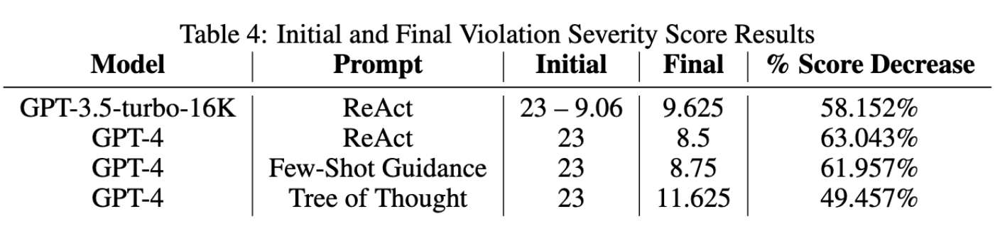

With the increasing need for inclusive, user-friendly technology, web accessibility is crucial to ensuring equal access to online content for individuals with disabilities, including visual, auditory, cognitive, or motor impairments. Despite the existence of accessibility guidelines and standards such as Web Content Accessibility Guidelines (WCAG) and the Web Accessibility Initiative (W3C), many websites still fail to meet the necessary accessibility requirements. Manually detecting and correcting accessibility violations can be time-consuming and error-prone, highlighting the need for automated and intelligent solutions. While research has demonstrated methods to find and target accessibility errors, limited research has focused on effectively correcting accessibility violations. This paper presents an automatic deep-learning-based approach to correcting accessibility violations in web content. We aim to enhance web accessibility, promote inclusivity, and improve the overall user experience for individuals with impairments. We employ website accessibility violation data and prompt engineering to identify potential accessibility issues within HTML code. Leveraging accessibility error information, large language models (LLMs), and prompt engineering techniques, we achieved an over 55% reduction in accessibility violation errors after corrections. While our research successfully illustrated the ability of prompt engineering techniques to efficiently correct website accessibility violation errors, further research may be necessary to explore a larger range of website URLs or to focus on researching techniques for best handling specific common accessibility errors. Our work demonstrates a valuable approach toward the direction of inclusive web content, and provides directions for future research to explore advanced methods to automate web accessibility.
(Talk more about benchmark here + describe the figure below) ...We initiated our research by developing a comprehensive dataset using the Playwright API, allowing us to scrutinize various features critical to web accessibility...
(talk more about our model approach here - copy and paste from the paper if needed) ...After using identifying web accessibility violations and their details on various websites, we then employed the GPT model and prompt engineering to automatically correct these issues in the DOM, retesting with Playwright to assess the improvement in error severity...
(talk about how we ran the benchmark here and introduce the results - again copy from the paper if needed)
Our work has yielded significant results in that our approach was able to decrease severity scores by over 55%, with the average number of violations per URL decreasing by 41.463%.
(add a little more discussion + conclusion highlighting the importance of your work)
BibTex Code Here